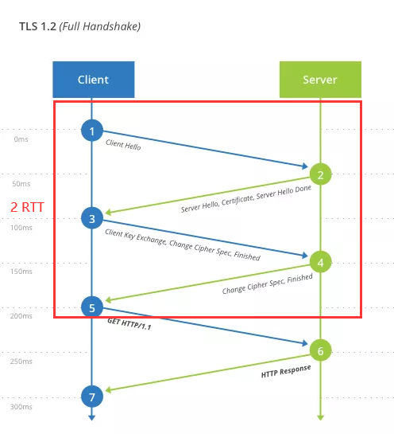
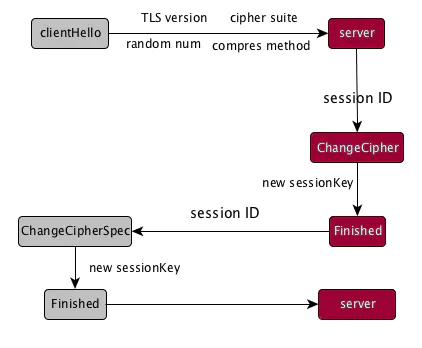
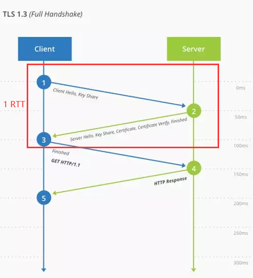

TLS session resumption
在上一节我们介绍了 OCSP stapling。本节我们介绍另一种 HTTPS 性能优化的技巧，TLS session resumption。
一个 完整 的 TLS 握手需要两次：

TLSv1.2 完整 TLS 握手（图片来自 浅谈 TLS 1.3）
- 1、Client 发送 ClientHello；Server 回复 ServerHello
- 2、Client 回复最终确定的 Key，Finished；Server 回复 Finished
- 3、握手完毕，Client 发送加密后的 HTTP 请求；Server 回复加密后的 HTTP 响应
这一过程的花费是 2RTT（Round-Trip-Time）。意味着仅仅部署了 HTTPS，就会让你的 Web 应用的响应都慢上 2RTT。 花在信息传递过程中的延迟在整个响应时间的占比不容小觑，看看国内有多少 CDN 厂商就知道了。
为什么强调是“完整的”呢？因为通过 TLS session resumption，我们可以复用未过期的会话，把 RTT 减低到 1，甚至更低。TLSv1.2 有两种会话恢复的方式：Session ID 和 Session Ticket。
Session ID
Session ID 是最早的 TLS session resumption 方案。除了某些上古浏览器，大部分客户端都支持它。 Client 发送的 ClientHello 当中，就包含了一个 Session ID。服务器接收到 Session ID 之后，会返回之前存储的 SSL 会话。这么一来，重建连接就只需一次 TLS 握手。

Session ID 方案（图片来自 完全吃透 TLS/SSL）
- 1、Client 发送 ClientHello（包含 Session ID）；Server 回复 ServerHello 和 Finished
- 2、握手完毕，Client 发送加密后的 HTTP 请求；Server 回复加密后的 HTTP 响应
Nginx 自身支持 Session ID，但有个问题，它的会话最多只能存储在共享内存里面。服务器和客户端上次握手建立的会话，只有某个服务器自己认得，换个服务器就忘光光了。当然你也可以要求负载均衡的时候只用 IP hash，尽管在实际情况中这么做不太现实。
OpenResty 提供了 ssl_session_fetch_by_lua* 和 ssl_session_store_by_lua* 这两个支持协程的阶段，以及跟 Session id 相关的 ngx.ssl.session 模块，把存储的决定权交到开发者手中。
你可以把 session 放到独立的 Redis 或 Memcached 服务器上。
Session Tickets
不过你可能已经不需要额外折腾 ssl_session_* 的代码。因为 Session ID 已经过时了。
TLS 提供了名为 Session Tickets 的拓展，用来代替之前的 Session ID 方案。
Session ID 方案要求服务端记住会话状态，有违于 HTTP 服务无状态的特点。Session Tickets 方案旨在解决这个问题。
Session Tickets 跟 Session ID 差不多，只是有点关键上的不同：现在轮到 由客户端记住会话状态。
- 1、Client 发送 ClientHello（包含 Session Ticket）；Server 回复 ServerHello 和 Finished
- 2、握手完毕，Client 发送加密后的 HTTP 请求；Server 回复加密后的 HTTP 响应
服务端仅需记住当初用于加密返回给客户端的 Ticket 的密钥 ，以解密客户端握手时发送的 Session Ticket。
这么一来，只要在不同的服务器间共享同一个密钥，就能避免会话丢失的问题，不再需要独立的 Redis 或 Memcached 服务器来存储会话信息。
在高兴之余看下 两个坏消息：
- 1、Session Tickets 不具有前向安全性，所以你需要定期轮换服务端用于加密的密钥。
- 2、只有现代浏览器才支持这一 TLS 拓展。比如 Win7 下的 IE 就不支持。
对于 Nginx，你需要关注两个指令：ssl_session_tickets 和 ssl_session_ticket_file。
前者启用 Session Tickers 支持，后者决定具体用到的密钥。如果不配置后者，则使用随机生成的密钥。这意味着每台服务器返回的 session ticket 会不一样。
如果你需要管理一整套 OpenResty 集群，可以看下 lua-ssl-nginx-module 这个模块，它可以实现集群层面上的密钥轮换（且无需重启 Worker 进程）。
尽管 lua-ssl-nginx-module 只提供了跟 memcache 配套使用的接口，但是参照 lualib/ngx/ssl/session/ticket/key_rotation.lua，实现自己的一套密钥存储/同步方案不过是照葫芦画瓢。
关键在于 lualib/ngx/ssl/session/ticket.lua 其中的这两个函数：
- 1、
update_ticket_encryption_key(key, nkeys)：插入新的密钥，之前的密钥会被轮转成解密密钥，最多保留nkeys个密钥。 - 2、
update_last_ticket_decryption_key(key)：替换当前的解密密钥。
两种方案的对比
| 序号 | Session ID | Session Tickets |
|---|---|---|
| 1 | 减少一个 RTT | 减少一个 RTT |
| 2 | 减少非对称加密 | 减少非对称加密 |
| 3 | 客户端支持率较高 | 支持分布式环境 |
| 4 | 服务端缓存，耗费内存 | 客户端支持率较低 |
| 5 | 较难支持分布式缓存 | 维护全局 session ticket 密钥 |
0 RTT!?
既然通过 Session ID/Tickets，我们已经把 RTT 减到了 1，能不能更进一步，减到 0？ 初看像是天方夜谭，但最新的 TLSv1.3 确实允许做到这一点。（所谓 0 RTT 是指在会话复用的基础上做到的，在完整握手时没法做到 0 RTT。 ）

TLSv1.3 完整 TLS 握手（图片来自 浅谈 TLS 1.3）
在继续之前先看下 TLSv1.3 的支持情况：Nginx 需要 1.13+ 的版本，外加 OpenSSL 1.1.1。客户端方面，截止到写作本文的时间，Firefox 和 Chrome 的 nightly build 版本均支持。
0 RTT 是 TLSv1.3 的可选功能。客户端和服务器第一次建立会话时，会生成一个 PSK（pre-shared key）。服务器会用 ticket key 去加密 PSK，作为 Session Ticket 返回。 客户端再次和服务器建立会话时，会先用 PSK 去加密 HTTP 请求，然后把加密后的内容发给服务器。服务器解密 PSK，然后再用 PSK 去解密 HTTP 请求，并加密 HTTP 响应。
- 1、Client 发送 ClientHello（包含 PSK）和加密后的 HTTP 请求；Server 回复 ServerHello 和 Finished 和加密后的 HTTP 响应。
这就完事了。
由于 HTTPS 握手已经跟 HTTP 请求合并到一起，确实是当之无愧的 0 RTT 呢。
在高兴之余看下 两个坏消息：
- 1、PSK 不具有前向安全性，所以你依然需要定期轮换服务端用于加密的 ticket key。
- 2、0 RTT 不提供 non-replayable 的保障，所以需要更上层的 HTTP 协议提供防重放的保障。比如只在幂等的 HTTP 方法中启用 0 RTT，或者实现额外的时序标记。
RTT 对比
下表是一个完整 HTTP/2 请求从 TCP 开始所需的 RTT 对比：
| 序号 | 版本和连接类型 | TCP 握手 | TLS 握手 | HTTP 请求 | 总计 |
|---|---|---|---|---|---|
| 1 | TLSv1.2 首次连接 | 1-RTT | 2-RTT | 1-RTT | 4-RTT |
| 2 | TLSv1.2 会话复用 | 1-RTT | 1-RTT | 1-RTT | 3-RTT |
| 3 | TLSv1.3 首次连接 | 1-RTT | 1-RTT | 1-RTT | 3-RTT |
| 4 | TLSv1.3 会话复用 | 1-RTT | 0-RTT | 1-RTT | 2-RTT |
从表中可以看出，不管是 TLSv1.2 还是 TLSv1.3、首次连接还是会话复用，TCP 握手和 HTTP 请求各 1 个 RTT 是不可避免的，能优化的就只有 TLS 握手了。 从上面的 TLSv1.2 和 TLSv1.3 的握手原理可以知道，在首次连接和会话复用情况下，TLSv1.3 都比 TLSv1.2 少一个 RTT。
参考
图片和 RTT 对比来自以下文章：